Enterprise product · Carlsberg Group
Cadi
Bringing field sales into one connected experience.
Cadi brings customer management, territory planning, scheduling, and ordering together in one platform for Carlsberg's sales representatives.
As lead designer, I worked from field research and user journeys through interaction design and delivery, helping replace fragmented tools and manual processes with a more integrated experience.
The platform was designed for different sales workflows and market requirements, with offline capabilities for representatives working in areas with unreliable connectivity.
Discovery — Understanding the problem
We started in Denmark, where Carlsberg's Copenhagen office gave us direct access to both sales managers and their teams in the same building. That made it easy to move fast.
We began with sales managers, who quickly identified the most common complaint from their teams: too many apps. Representatives were switching between Salesforce for orders, Outlook for scheduling, maps for navigation, notes for customer requests, and separate web forms to record FIT scores — Carlsberg's internal Focus, Implement, Track metric.
To go beyond the reported pain points, we shadowed representatives in the field during actual customer visits. This revealed a problem that hadn't come up in the manager interviews: unreliable connectivity. Whenever reps were inside a customer's storage area — cellars, pantries, back rooms — they frequently lost internet access and couldn't complete tasks that depended on online systems.
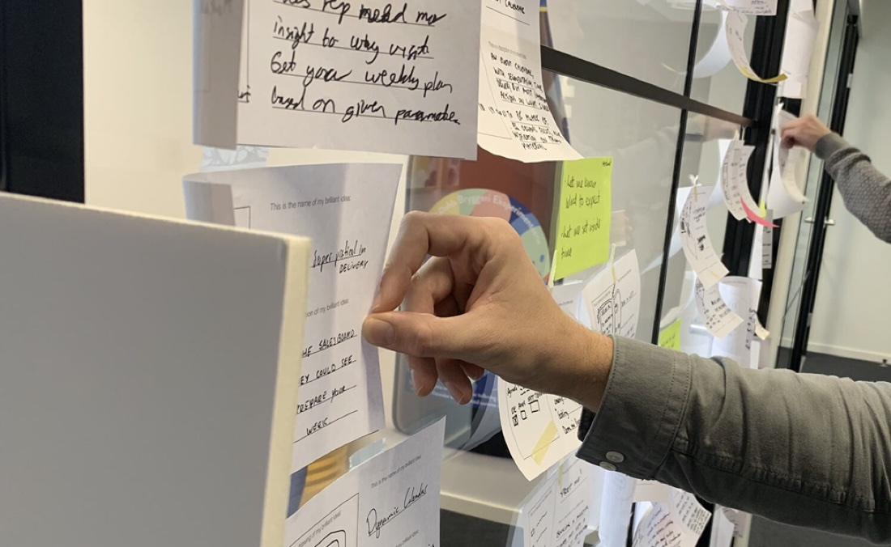
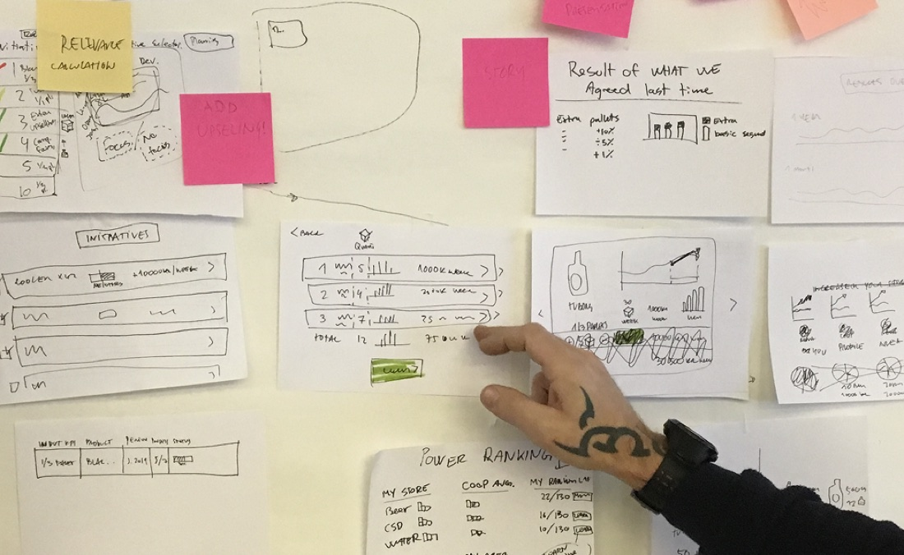
The challenges
Customer face-time
Reps have full schedules, so the platform had to be fast and intuitive enough to never steal time from their customers.
Calendar sync
Reps live in Microsoft Outlook, so Cadi needed to sync directly rather than scatter information across tools.
Map visualization
Finding customers by address isn't intuitive, so a visual territory map was essential.
Customer check-ins
A clear way to see which customers were visited and which were still on the list.
Offline ordering
The platform had to work as an ordering tool at all times, even with no connection.
Notes and reminders per customer
A reliable place to capture preferences and follow-ups, so nothing is lost between visits.
Target audience
Since Cadi is an internal tool for the Carlsberg Group, our users were easy to identify. We focused on bridging the gap between two very different profiles: the tech-savvy user and the traditional user. We built six personas in total; these two anchor our "On-Trade" and "Off-Trade" salesforce.
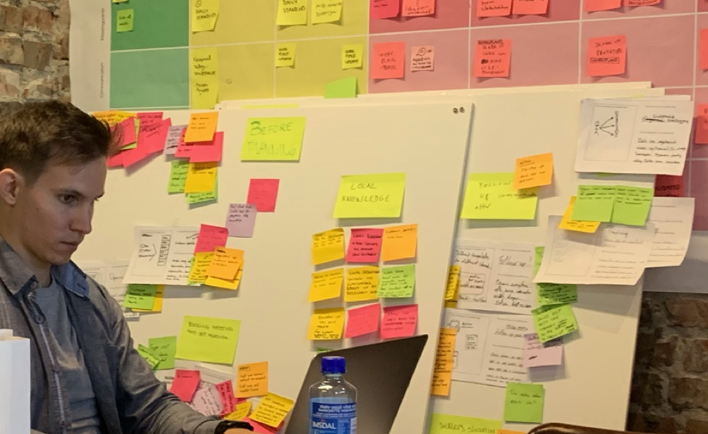
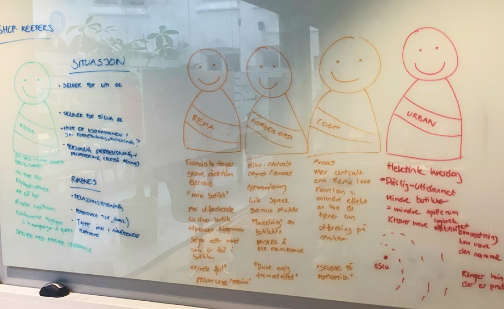
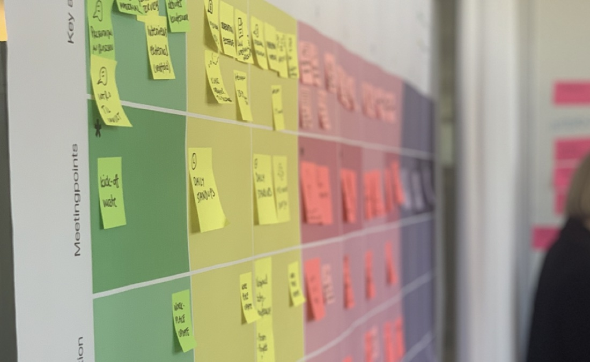
Laura Thompson
Objectives
- Hit monthly sales targets and, if able, go further.
- Acquire at least two new prospects per month.
- Finish her day by 4:00 PM to enjoy some family time.
Pain points
- Many of the bars and cellars she visits have no internet access.
- She wastes time getting lost looking for specific customer locations.
- She still prefers pen and paper; she finds complex software frustrating.
John Lecroy
Objectives
- Win the monthly best-seller award.
- Acquire four prospects per month.
- Reduce his overtime hours.
Pain points
- He feels he has to use too many different apps to do one job.
- He struggles to find a clear, simple way to see where potential new customers are located.
User journeys
To understand how to build the best tool, I interviewed and shadowed reps during their actual workdays, watching how they managed tasks with other apps or just pen and paper.
The goal was a structured flow flexible enough for multiple markets and different types of reps. I mapped specific journeys to cover every scenario: check the agenda, navigate to a customer, document the visit, with variations to keep each path smooth.
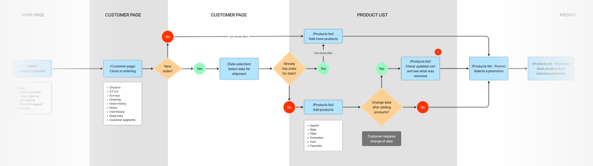
Flow charts and wireframes
Once we understood the journeys, it was time to build the app's skeleton. We started from the must-have pages reps called essential, Map, Agenda, and Order Entry, and the site map grew into a full system from there. The focus was clear navigation, any tool within one or two taps.
I kept the wireframes low-fidelity so the team could focus on logic, layout, and usability without getting distracted by color. The goal was to prove the structure worked for both the tech-savvy and the old-school personas before any brand went in.
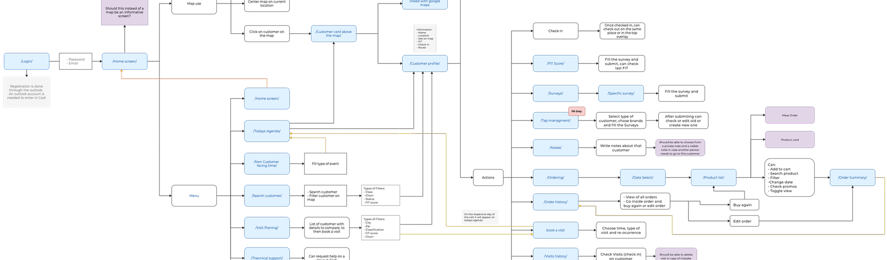
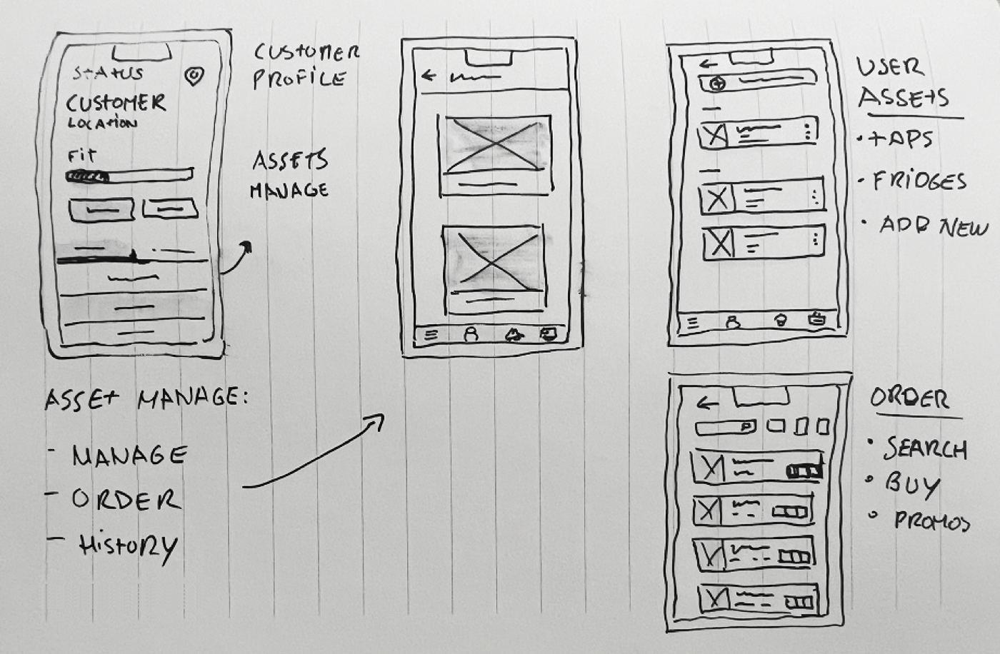
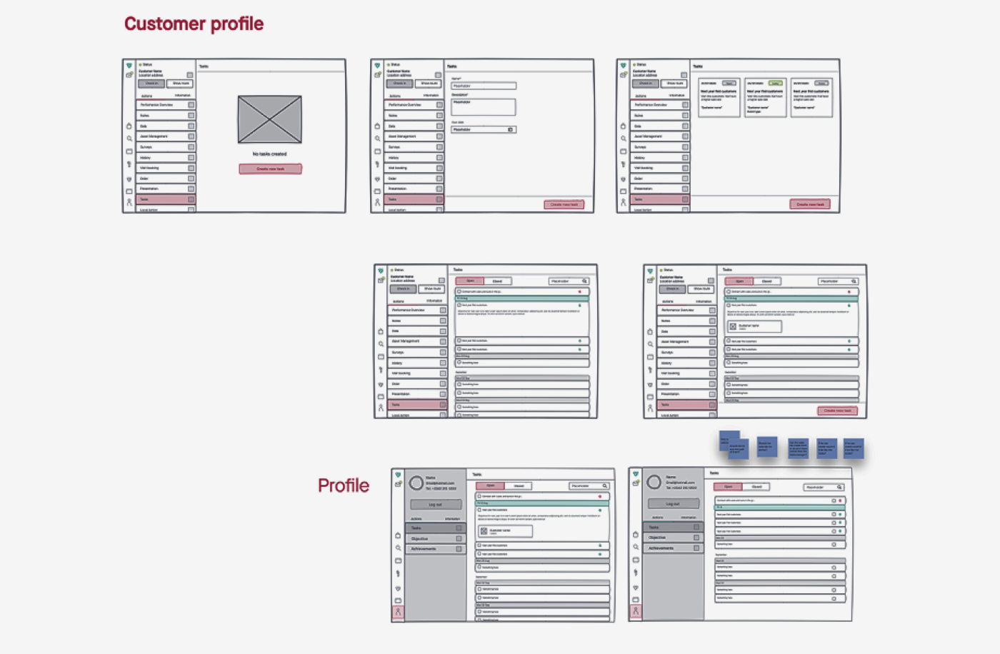
UI elements
With the structure set, we moved into final UI. We were building a design system at the same time, so the platform stayed consistent as it grew. Cadi brand colors, custom icons, and illustrations made the tool feel modern and professional while staying simple enough to use without training.
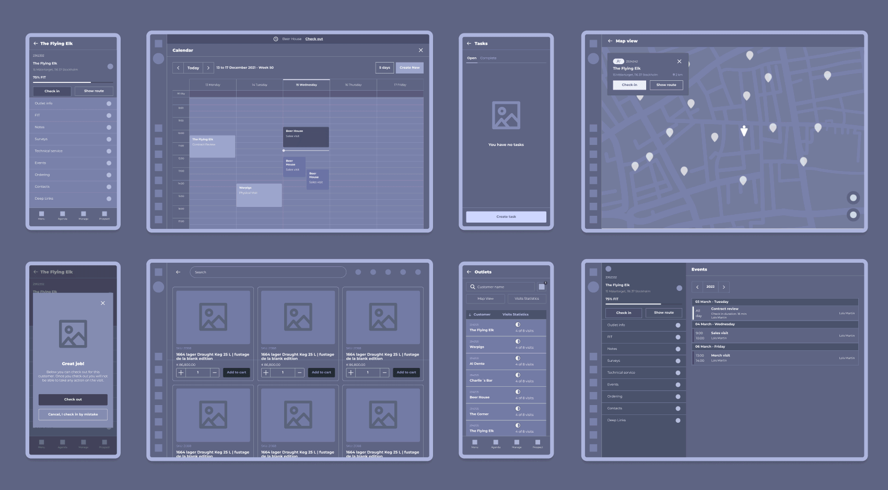
The brand
The name comes directly from the word "caddie," the essential assistant who helps a golfer on the course. That is exactly the role Cadi plays for our reps: a proactive, personal assistant in the field.
The brief was clear: a serious tool with a playful vibe. The logo combines a location pin and a stylized "C." The pin symbolizes precision — the right information at the right moment in the right place — and the teal body keeps it fresh and approachable, distinct from dull corporate software.
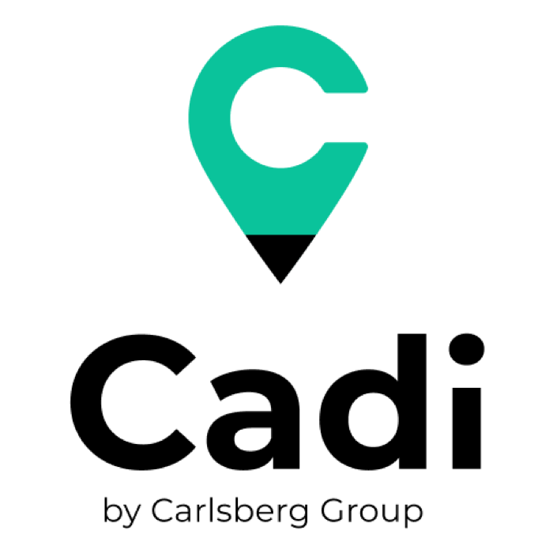
What we expected vs. what actually happened
After about a month of real usage in the Denmark pilot, we went back to the reps for structured feedback. Some findings confirmed our assumptions. Others didn't.
The map was used far less than we expected. We had assumed territory navigation would be a primary feature. In practice, most reps already knew their customers' locations well enough to skip it.
The calendar was everything. It was the first thing reps opened each morning and the feature they relied on most throughout the day. But there was a problem: they still had to maintain two separate calendars — Cadi for customer visits, and Outlook for everything else (internal meetings, workshops, personal appointments). Double-booking created friction and reduced trust in Cadi as a single source of truth.
We also noticed two distinct usage patterns emerge. Some reps processed everything live during the visit, as intended. Others took notes on the go and submitted everything in a single batch later. Neither approach was wrong — both groups were using the platform daily — but it shaped how we thought about flexibility in the design.
Based on these findings, we made two key changes: direct Outlook synchronisation so both calendars stayed in sync automatically, and a redesigned weekly view to replace the original daily-and-tomorrow layout, giving reps a clearer picture of their full week at a glance.
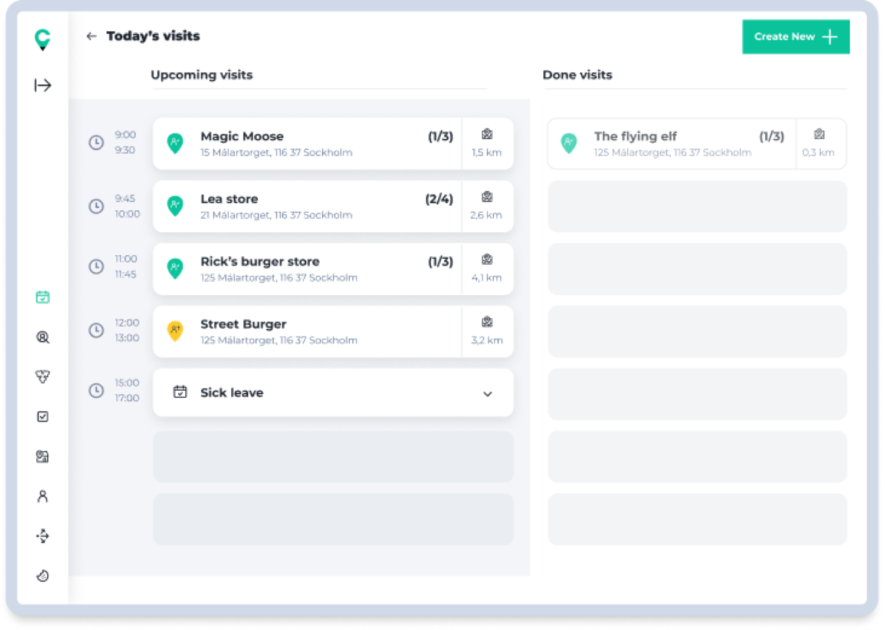
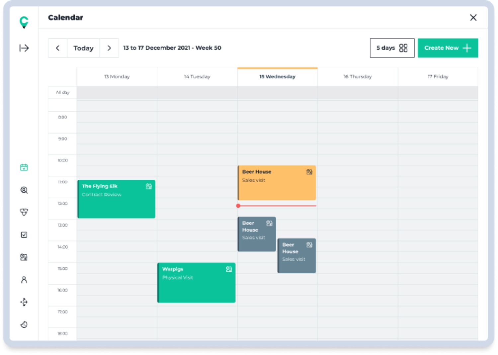
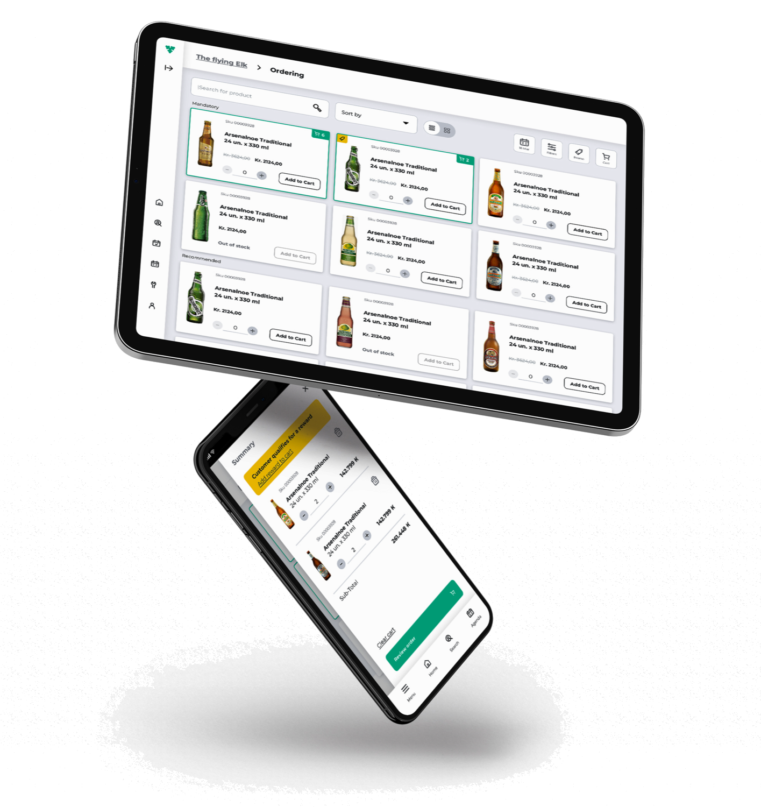